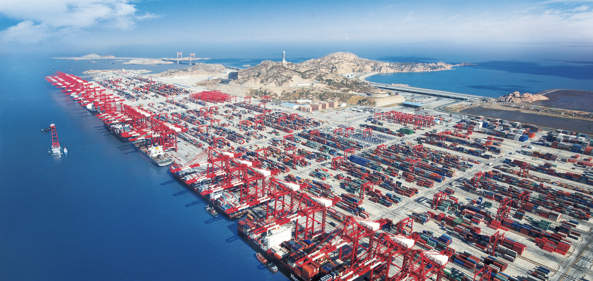
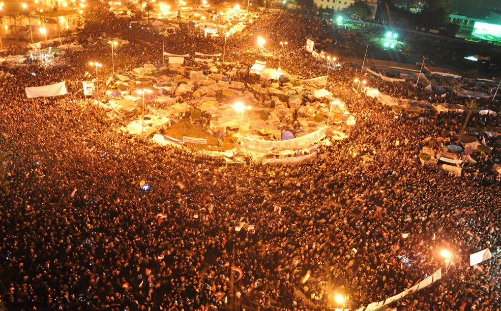
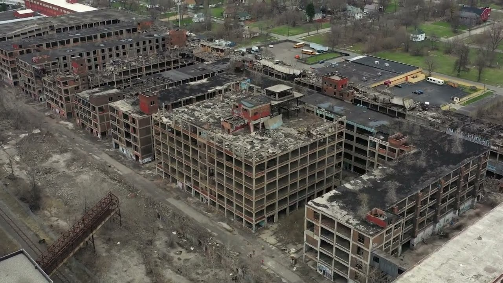
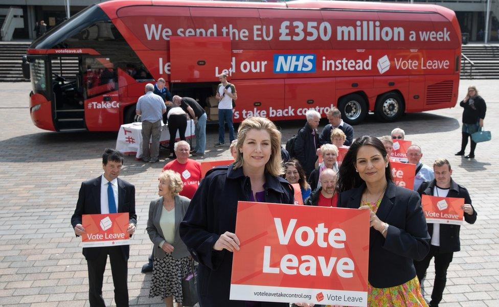
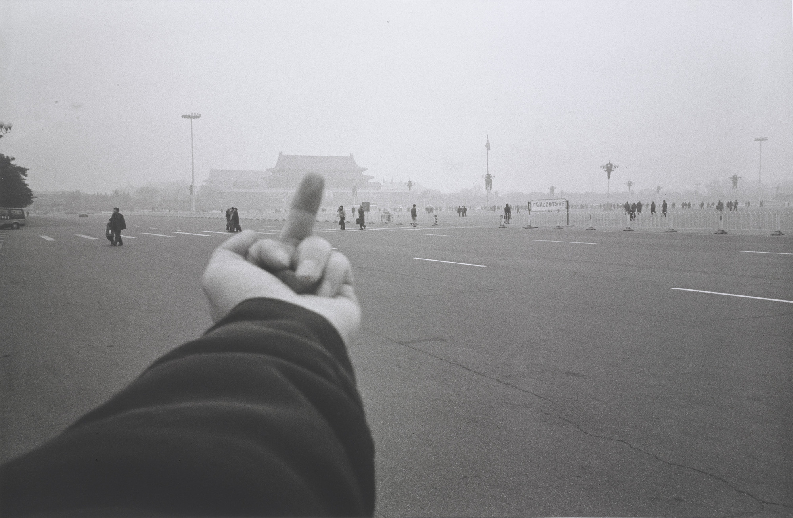
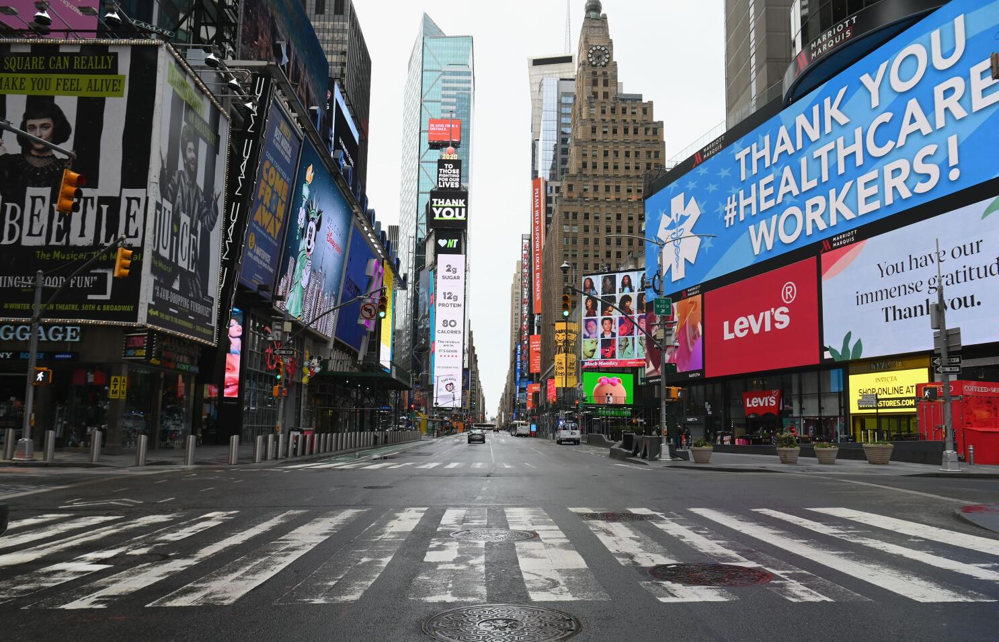
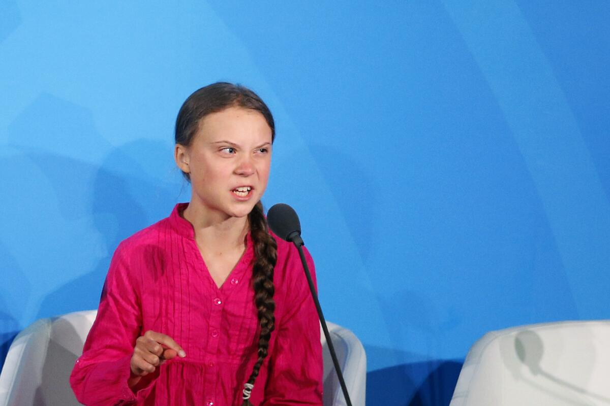
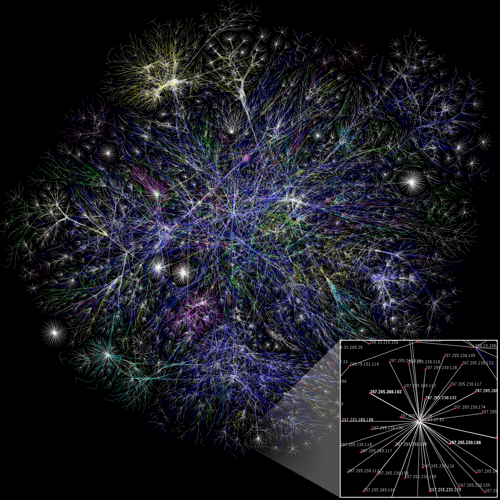
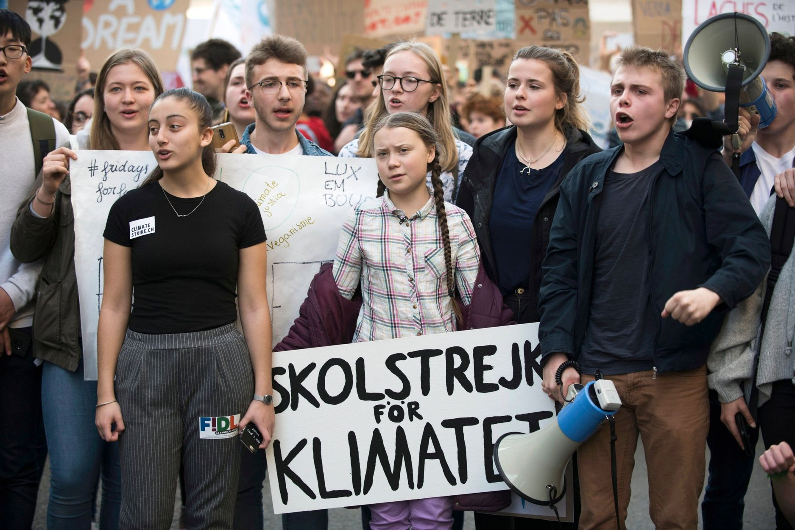

WORLD HISTORY : SEMESTER 2 : LESSON 09 : STANDARD 10.11
A WORLD WITHOUT WALLS
ESSENTIAL QUESTIONWhat happens when a world built to connect people also gives governments, corporations, and algorithms new ways to shape what we see, believe, and do?
THE CONNECTED WORLD : 1991 TO TODAY
1991
The Cold War ends. Many leaders believe democracy, trade, and open markets will spread across the world.
2001
China joins the World Trade Organization. Global manufacturing and supply chains expand rapidly.
2010
The Arab Spring begins. Protesters use phones and social media to challenge authoritarian governments.
2016
Populist movements gain power in several democracies. Online politics becomes more emotional and polarized.
2020s
Covid and AI reveal how powerful, fragile, and uncertain the connected world has become.
Before school even starts, a student can wake up to an alarm built into a phone designed in California, assembled in Asia, and powered by minerals mined in Africa and South America. They might watch a video made in Korea, message a friend across town, read a rumor from another country, and ask an AI tool for help with homework. None of that feels unusual anymore. But for most of human history, ordinary people could not speak, shop, learn, or argue across the planet in seconds.
Before school even starts, a student can wake up to a phone designed in California and assembled in Asia. They might watch a video from Korea, message a friend, read news from another country, and use AI for homework. This feels normal now. But for most of history, ordinary people could not connect across the world in seconds.
After the Cold War ended in 1991, many people believed the world was entering a new era. They hoped that globalizationThe process of countries becoming connected through trade, technology, culture, and travel., the internet, and global trade would make countries more open and peaceful. The old walls between countries seemed to be coming down. Yet the same connected world also created new tools for surveillanceWatching people closely, often by collecting information about where they go and what they do., misinformation, political anger, and control. The final chapter of modern world history is not just about connection. It is about who controls that connection.
After the Cold War ended in 1991, many people believed the world would become freer and more peaceful. They thought trade, the internet, and global connection would bring people together. Some walls between countries did come down. But the connected world also created new ways to watch people, spread false information, and control what people see. This lesson asks who controls connection.
CHAPTER ONE
EVERYTHING CONNECTS

A modern container port. Global trade depends on ships, ports, warehouses, and workers most consumers never see. Source: Wikimedia Commons.
When the Cold War ended, many leaders believed democracy and global capitalism had won the major argument of the twentieth century. Countries opened markets, lowered trade barriers, and joined international organizations. Companies built supply chainsNetworks of workers, companies, and countries that help make and move a product. that stretched across continents. A shirt could be designed in one country, sewn in another, shipped through a third, and sold in a fourth. For students, this world shows up in clothes, shoes, phones, games, music, and food.
After the Cold War, many leaders believed democracy and global capitalism had won. Countries opened markets and traded more with each other. Companies built supply chains across many countries. A shirt could be designed in one place, made in another, shipped through another, and sold somewhere else. Students see this global system in clothes, shoes, phones, games, music, and food.
China became one of the clearest examples of the new global age. In 2001, China joined the World Trade OrganizationAn international group that sets rules for trade between countries., which connected its factories more deeply to the world economy. Many leaders in the United States and Europe believed that economic growth would lead China toward greater freedom. They thought that a larger middle class, more trade, and more access to information would naturally push the country toward democracy. Instead, China grew richer while the Communist Party kept tight political control.
China became a major example of the new global age. In 2001, China joined the World Trade Organization, which connected its factories more deeply to the world economy. Many leaders thought trade would lead China toward greater freedom. They believed a growing middle class and more information would push China toward democracy. Instead, China became richer while the Communist Party kept tight control.
The internet made this connected world feel even smaller. In the 1990s, going online often meant using a slow computer, a noisy dial-up modem, and a few basic websites. By the 2000s and 2010s, billions of people could carry the internet in their pockets. Information, culture, and anger could move across borders instantly. The world had fewer walls, but that did not mean it had fewer conflicts.
The internet made the connected world feel even smaller. In the 1990s, people used slow computers and basic websites. By the 2000s and 2010s, billions of people carried the internet in their pockets. Information, culture, and anger could move across borders instantly. The world had fewer walls, but it did not have fewer conflicts.
Real-world connection: When students buy something online, stream a song, follow a creator, or read a post from another country, they are participating in the global system built after the Cold War.
Real-world connection: When students shop online, stream music, watch a creator, or read a post from another country, they are using the global system built after the Cold War.
DID YOU KNOW
A dial-up modem from the early internet era. Source: Wikimedia Commons.
In 1995, only a tiny share of the world's population used the internet, and many homes could not use the phone while someone was online. A single image could load line by line like a curtain slowly opening. Within one generation, the internet went from a strange sound coming through a modem to the place where billions of people learn, shop, date, protest, argue, and create.
CHAPTER TWO
WHEN THE INTERNET TURNED BOTH WAYS

Protesters during the Arab Spring, 2011. Phones and social media helped ordinary people share images, organize crowds, and challenge governments. Source: Wikimedia Commons.
In late 2010, a Tunisian street vendor named Mohamed Bouazizi set himself on fire after police harassment. News of his protest spread quickly, and demonstrations grew across Tunisia. Soon, protests spread through Egypt, Libya, Yemen, Syria, and other countries. Many young people used Facebook, Twitter, YouTube, and phones to share videos, call people into the streets, and show the world what governments were doing. For a moment, it looked like the internet had given ordinary people a tool powerful enough to challenge dictators.
In late 2010, a Tunisian street vendor named Mohamed Bouazizi set himself on fire after police harassment. News of his protest spread quickly. Demonstrations grew in Tunisia and then spread to Egypt, Libya, Yemen, Syria, and other countries. Many young people used Facebook, Twitter, YouTube, and phones to share videos and organize crowds. For a moment, it looked like the internet could help ordinary people challenge dictators.
The hope did not last in the way many people expected. Some governments fell, but others fought back brutally. Syria descended into civil war, and millions of people became refugees. Governments also learned from the protests. They realized that the same internet that helped people organize could also help states track activists, block websites, shut down networks, spread propaganda, and flood social media with false information.
The hope did not last the way many people expected. Some governments fell, but others fought back brutally. Syria became a civil war, and millions of people became refugees. Governments also learned from the protests. They saw that the internet could help them track activists, block websites, shut down networks, and spread false information.
China built one of the world's most advanced systems of censorshipGovernment control over what people can read, say, watch, or share. and digital monitoring. Russia became skilled at using online propaganda and disinformation to weaken trust in elections, news, and democratic institutions. Other governments watched and adapted. The internet did not automatically make the world freer. It became a battlefield over attention, memory, truth, and power.
China built one of the world's strongest systems for online censorship and digital monitoring. Russia became skilled at using online propaganda and false information to weaken trust in elections and news. Other governments watched and learned. The internet did not automatically make the world freer. It became a battlefield over attention, truth, and power.
FAST FACTS
THE CONNECTED WORLD IN NUMBERS
2001the year China joined the World Trade Organization, linking its factories more deeply to global trade
5B+people now use the internet, meaning most of humanity can send and receive information across borders
90%of world trade by volume moves by sea, showing that the digital world still depends on ships, ports, and workers
2020the year Covid pushed school, work, medicine, shopping, and politics even deeper into online life
CHAPTER THREE
THE POLITICS OF ANGER

A closed factory. Globalization lowered prices and created wealth, but some communities lost stable industrial jobs. Source: Wikimedia Commons.

A political rally in the 2010s. Populist movements often used mass rallies and social media to present politics as a battle between ordinary people and powerful elites. Source: Wikimedia Commons.
Globalization created huge amounts of wealth, but it did not share that wealth evenly. Some workers benefited from new markets and new technology. Others watched factories close, wages stall, and local communities weaken as production moved overseas. Immigration and rapid cultural change also made some people feel that their countries were changing too quickly. These feelings did not come from one place or one political party. They appeared in many countries at the same time.
Globalization created a lot of wealth, but it did not share that wealth equally. Some workers benefited from new markets and technology. Others saw factories close, wages stop growing, and local communities weaken. Immigration and fast cultural change also made some people feel their countries were changing too quickly. These feelings appeared in many countries at the same time.
PopulismA political style that claims to speak for ordinary people against powerful elites or outsiders. grew in this environment. Populist leaders often argued that they alone represented the real people against elites, experts, immigrants, journalists, judges, or international organizations. In Hungary, Viktor Orban used elections to build a system that weakened courts, media, and opposition parties. In Russia, Vladimir Putin used nationalism, media control, and state power to recentralize authority. In many democracies, politics became more emotional, more tribal, and more suspicious of institutions.
Populism grew in this environment. Populist leaders often said they spoke for the real people against elites, experts, immigrants, journalists, judges, or international organizations. In Hungary, Viktor Orban used elections to weaken courts, media, and opposition parties. In Russia, Vladimir Putin used nationalism, media control, and state power to centralize authority. In many democracies, politics became more emotional and more suspicious of institutions.
Social media made this anger faster and louder. AlgorithmsComputer rules that decide what content people see online. learned that emotional content kept people watching, clicking, and sharing. Posts that made people afraid or angry often traveled farther than careful explanations. This did not create political division by itself, but it amplified division that already existed. The connected world made it easier to find community, but it also made it easier to find enemies.
Social media made anger faster and louder. Algorithms decide what people see online. They learned that emotional posts keep people watching, clicking, and sharing. Posts that make people afraid or angry often spread farther than careful explanations. The connected world made it easier to find community, but it also made it easier to find enemies.
ART SPOTLIGHT

Study of Perspective: Tiananmen Square : Ai Weiwei, 1995 Ai Weiwei photographed his hand making a rude gesture toward Tiananmen Square in Beijing, a place tied to state power and to the memory of the 1989 pro-democracy protests.
The image looks simple, almost like a tourist snapshot, but that is what makes it dangerous. Ai Weiwei turned a small hand gesture into a direct challenge to political authority and public memory. Years later, Chinese authorities detained him, monitored him, and took away his passport, showing how art, the internet, and state power could collide in the connected age.
CHAPTER FOUR
THE CRISIS YEARS

An empty city street during a Covid lockdown, 2020. The pandemic showed how quickly a crisis could move through a connected world. Source: Wikimedia Commons.
Covid-19 revealed how connected the world had become and how fragile that connection could be. A virus first identified in late 2019 traveled through global transportation networks and became a pandemic in 2020. Schools, workplaces, churches, courts, stores, and doctor visits moved online almost overnight. Supply chains broke down, and people suddenly noticed how much daily life depended on factories, ships, truck drivers, nurses, grocery workers, and internet access. The world did not stop being connected during Covid. It became connected in more stressful and unequal ways.
Covid-19 showed how connected and fragile the world had become. A virus first identified in late 2019 spread through global travel and became a pandemic in 2020. Schools, jobs, stores, churches, doctor visits, and courts moved online almost overnight. Supply chains broke down. People saw how much daily life depended on workers, shipping, factories, nurses, grocery stores, and internet access. The world stayed connected during Covid, but in more stressful and unequal ways.
The pandemic also became an information crisis. People needed accurate information about masks, vaccines, hospitals, and risk. At the same time, false claims spread quickly online. Some people lost trust in experts, governments, and news organizations. The crisis showed that a connected world can move medicine and knowledge faster than ever before, but it can also move fear and falsehood just as quickly.
The pandemic also became a crisis of information. People needed accurate information about masks, vaccines, hospitals, and risk. At the same time, false claims spread quickly online. Some people lost trust in experts, governments, and news. Covid showed that a connected world can spread medicine and knowledge quickly, but it can also spread fear and falsehood quickly.
Artificial intelligenceComputer systems that can perform tasks that usually require human thinking, such as writing or recognizing images. raised the next question. AI tools can translate languages, write essays, make images, detect disease, and help solve problems. They can also create fake voices, fake photos, fake videos, and convincing misinformation. If the internet made information move instantly, AI makes information easier to manufacture. The students living through this moment will have to decide how a world without walls can still protect truth, privacy, and human dignity.
Artificial intelligence raises the next big question. AI tools can translate languages, write essays, make images, detect disease, and help solve problems. They can also create fake voices, fake photos, fake videos, and convincing false information. If the internet made information move instantly, AI makes information easier to create. Students living through this moment will have to decide how a connected world can protect truth, privacy, and human dignity.
PRIMARY SOURCE MOMENT

Greta Thunberg speaks at the United Nations Climate Action Summit, New York City, September 23, 2019. Source: Wikimedia Commons.
"You have stolen my dreams and my childhood with your empty words. And yet I am one of the lucky ones. People are suffering. People are dying. Entire ecosystems are collapsing. We are in the beginning of a mass extinction. You are failing us. But the young people are starting to understand your betrayal."
Greta Thunberg, United Nations Climate Action Summit speech, 2019.
WHY THIS MATTERS: Thunberg shows how the connected world gave young people a global stage. A teenager could speak directly to world leaders, and the clip could travel across the planet in hours. Her speech also shows the pressure young people place on systems they believe are moving too slowly.
IN SIMPLE TERMS: Thunberg is saying that adults promised progress but left young people with the consequences. She uses public anger to demand responsibility.
THEN AND NOW
THE WORLD HAS FEWER WALLS, BUT THE FIGHT OVER POWER HAS NOT DISAPPEARED.
1990S

Early public internet use in a computer lab, 1990s. Many people saw the internet as a doorway to knowledge and freedom. Source: Wikimedia Commons.
NOW

Young people at a climate strike using signs and phones to organize, document, and speak publicly. Source: Wikimedia Commons / CC.
THEN
In the 1990s, the internet looked like a doorway into a more open world. Students, workers, journalists, and activists could find information and connect across borders in ways earlier generations could barely imagine. Many people believed this new access would naturally make societies freer.
NOW
Today, young people use the same connected world to learn, create, organize, and challenge leaders. They also live with algorithms, surveillance, misinformation, online anger, and AI-generated content. The tool that opens the world also shapes what people see.
CONNECTION
The post-Cold War world promised connection, but connection alone never guaranteed freedom. Technology can help ordinary people speak, but it can also help powerful institutions watch, influence, and divide. The central question of the connected age is not whether the world has walls. It is who gets to build the invisible ones.
If the tools that connect people can also shape what they believe, who should be responsible for protecting truth and freedom?